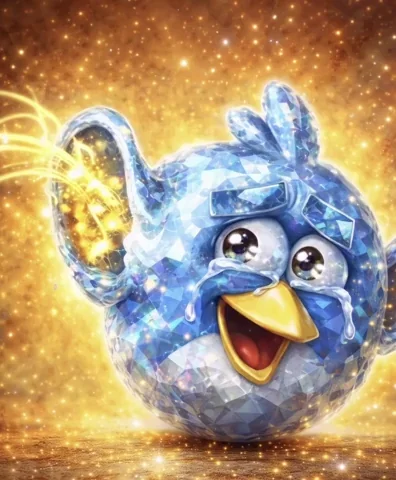
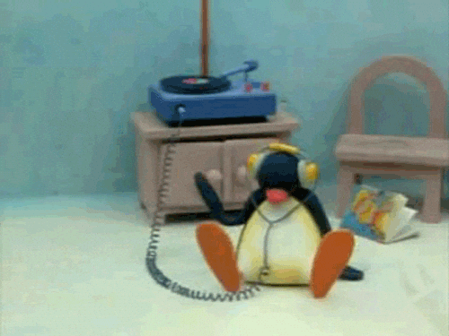

Suggest a song
Search for a song, confirm it's the right one, then send it my way. Confirmed songs get added straight to my playlist.
Listen to the playlist on Spotify →
Recent suggestions

Imported from my likes library. Around 1700 random songs, that I added with time. Some of them I don't listen that much... one reason I made this is because Spotify kept playing the same songs whenever I clicked the shuffle button on my likes.
Don't be afraid to share what you like to listen too. Use the suggestion section and if you'd like to listen to what others recommend you can click on the playlist link below.

Suggest a song
Search for a song, confirm it's the right one, then send it my way. Confirmed songs get added straight to my playlist.
Listen to the playlist on Spotify →
Recent suggestions
